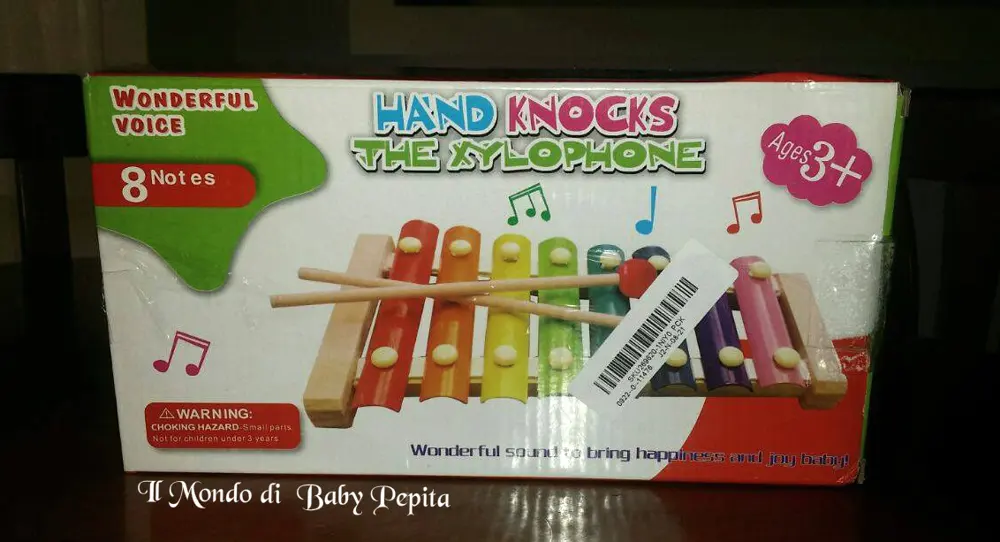
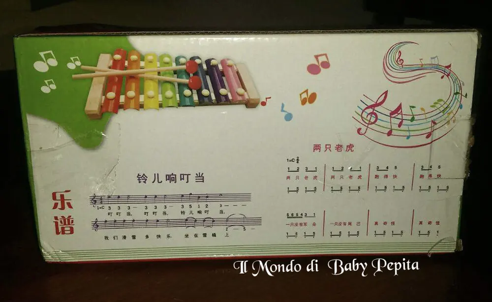
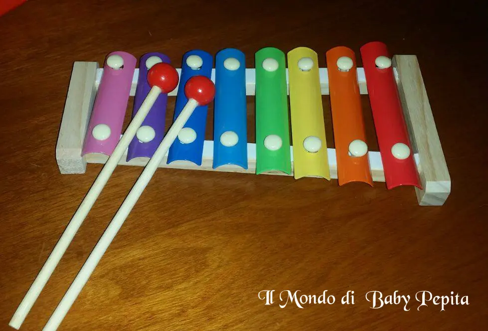
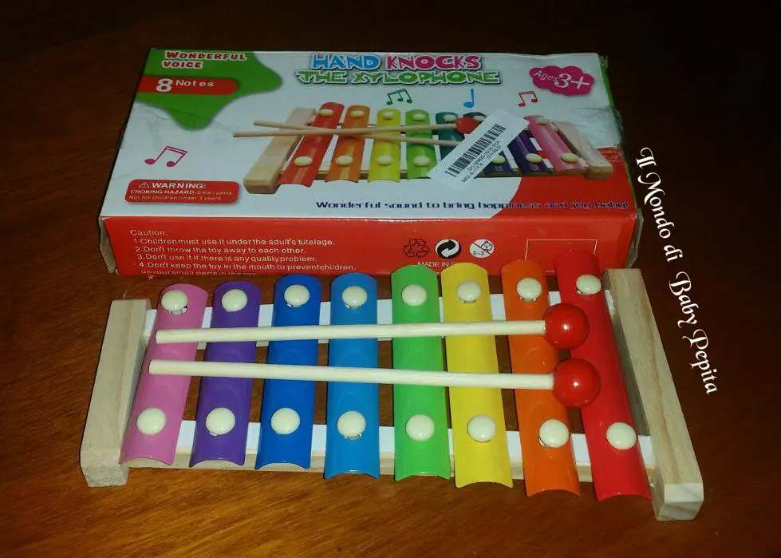
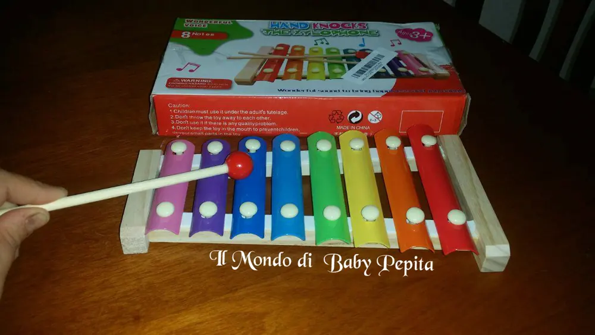

Pousrew - xilofono giocattolo
 Lo xilofono è un bellissimo strumento e mi ha sempre affascinata la sua melodia.IL giocattolo poi diventa anche divertente, poichè essendo colorato colorato mette allegria.
Lo xilofono è un bellissimo strumento e mi ha sempre affascinata la sua melodia.IL giocattolo poi diventa anche divertente, poichè essendo colorato colorato mette allegria.


Vediamolo nel dettaglio:Composto da 8 tegoline dei colori dell'arcobaleno in alluminio su una base in legno .

Ha 2 bacchette in legno con all'estremità due palline rosse,sempre in legno.Ovviamente ogni tegolina è associata ad una nota musicale, 8 note musicali in totale.
DO RE MI FA SOL LA SI DO
Attrae l'attenzione del bambino sia per i suoi colori sia per la sua dolce melodia.


Consigliato ai bambini dai 3 anni in su.

Il rapporto qualità/prezzo è ottimo e vale la pena acquistarlo.
 Prezzo: 12,38 €Per acquistarlo :https://www.amazon.it/Mohoo-musicale-Giocattoli-xilofono-prescolare/dp/B01DY8B4J0/ref=sr_1_100?m=A276FJY2XE9J41&s=merchant-items&ie=UTF8&qid=1474947833&sr=1-100
Prezzo: 12,38 €Per acquistarlo :https://www.amazon.it/Mohoo-musicale-Giocattoli-xilofono-prescolare/dp/B01DY8B4J0/ref=sr_1_100?m=A276FJY2XE9J41&s=merchant-items&ie=UTF8&qid=1474947833&sr=1-100Per quanto riguarda me seguitemi su:FACEBOOKINSTAGRAMTWITTER